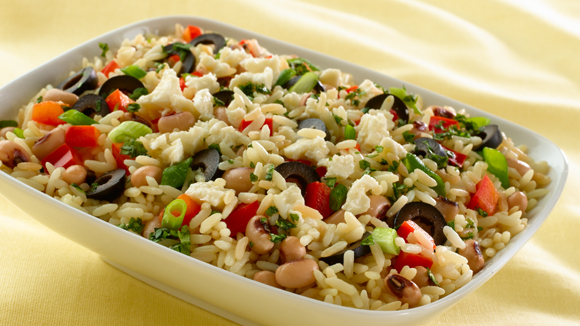

Comida Saludable
Todos buscamos estar y vernos saludables ,dentro de todas las opciones que existen vegetarianismo es una , sino la mejor para estar y verse más saludable, por sobre esto se contribuye a evitar la crueldad animal, la hambre mundial y también evitar las hormonas ,conservadores y químicos dañinos en la carne ,leche y productos derivados de animales .pero existen cierta problemática en esto; la mayoría de los vegetarianos sufren de déficit de algunos nutrientes importantes para la alimentación como lo es la proteína. La proteína es un macro nutriente necesario en el cuerpo que a deficiencia de este se caería fácilmente en desnutrición que pude causar anemia, baja de defensas y así mismo muchos problemas a la salud. Las proteínas son procesadas por el tracto digestivo y descompuestas en aminoácidos que son necesarios para funciones esenciales en el cuerpo como la conversión de grasa y azucares en energía, también la reparación y construcción de tejidos en el cuerpo. Las proteína se derivan de los alimentos y las mayores fuentes de ellos son los derivados de los animales y solo pocas fuentes vegetarianas cuentan como proteínas completas y aquí te enseñaremos las mejores.
Granos y legumbres
La soya
La soya como sabrás tiene infinidad de beneficios para la salud y algunos vegetarianos cuentan en ella como su mayor fuente de proteína, dentro de los beneficios que tiene la soya destacan su bajo valor calórico , contienen acido-alfa minoico que es un ácido graso, además de su alto contenido proteico y su ayuda a problemas de colesterol y beneficios al corazón peo sabias que la soya contiene isoflavones de soya que son Fito estrógenos que es un tipo de estrógeno encontrado en las plantas y pude tener varios efectos desagradables como lo sería alterar los niveles hormonales en el cuerpo también algunos estudios sugieren que puede ser la causa de cáncer de próstata y de mama aunque algunos otros sugieren lo contrario, así que la soya es considerada una de las mejores fuentes de proteína vegetariana.
Seistán
El sientan es un tipo de proteína basada en el gluten (el gluten es una proteína proveniente del trigo) es preparada con gluten y especias y aunque carece de ser una proteína completa es una de las mejores fuentes de proteína (claro si no eres intolerante al gluten) además esta solo es baja en lisina y como se mencionó anteriormente se puede complementar con alguna legumbre como los frijoles que son altos en este aminoácido. El sientan es bajo en calorías cuenta con 21g de proteína por porción de 1/3 de taza además y además es un gran substituto de carne desde hace miles de años.
Quínoa
La quínoa es una de las mejores fuentes de proteína vegetariana además de que cuenta con toda la gama de aminoácido y por eso es considerada como una proteína completa. La quínoa además de ser una buena fuente de proteína también es una excelente fuente de minerales y fibra. Dentro de los beneficios se cuentan la mejora de la digestión, perdida de grasa y ayuda en problemas como diabetes, estreñimiento y en el corazón. La quínoa tiene muchas variedades y es fácil de conseguirlas en cualquier supermercado y el amaranto es una buena substitución en caso de no encontrarla.
Semillas de cáñamo
 Las semillas de cáñamo son una de las mejores fuentes de proteína completa con todos los aminoácidos esenciales y cuenta también con todos los ácidos grasos esenciales los cuales son necesarios para una vida saludable. Esta cuentan con 580 calorías 37g de proteína por cada 100g además se consiguen fácilmente por internet. Estas se pueden encontrar y preparas un una alta gama de formas y presentaciones como lo sería en barras de cereal, galletas, substituto de crema de cacahuate (crema de semillas de cáñamo), en ensaladas o como una botana. Si alguna vez buscas una buena fuente de proteína vegetal y una lata fuente de ácidos esenciales recuerda que estas semillas son tu mejor opción.
Las semillas de cáñamo son una de las mejores fuentes de proteína completa con todos los aminoácidos esenciales y cuenta también con todos los ácidos grasos esenciales los cuales son necesarios para una vida saludable. Esta cuentan con 580 calorías 37g de proteína por cada 100g además se consiguen fácilmente por internet. Estas se pueden encontrar y preparas un una alta gama de formas y presentaciones como lo sería en barras de cereal, galletas, substituto de crema de cacahuate (crema de semillas de cáñamo), en ensaladas o como una botana. Si alguna vez buscas una buena fuente de proteína vegetal y una lata fuente de ácidos esenciales recuerda que estas semillas son tu mejor opción.
Algas marinas
Por excelencia la mejor fuente de proteína vegetariana, esta cuenta con todos los aminoácidos, es una buena fuente de vitamina b, vitamina c, minerales, es baja en calorías y además su contenido proteico es impresionante dentro de estas destaca la parolina. La parolina tan solo cuenta con 290 kcal por cada 100g y contiene 57.47g de proteína que es más de lo que pude ofrecerte cualquier otro tipo de fuente de proteína como lo sería en su ejemplo el pollo, que es esencial para la quema de grasa, reparación muscular y salud en general. Dentro de los beneficios se cuenta la optimización del sistema inmunológico, el incremento de utilización de grasas como energía y se cree incluso la longevidad, por lo tanto es considerada la mejor fuente de proteína vegetariana.
Granos y legumbres

Las legumbres son una excelente fuente de proteína sin embargo estas no cuentan con la biodisponibilidad necesaria para su absorción y no son una proteína completa así que es necesario combinarlos, como se sugiere : frijoles(preferentemente los negros) los frijoles son altos en lisina y bajos en metionina, el arroz integral es alto en metionina pero bajo en lisina , de esta manera cubren la deficiencia de una a otra complementándose y serán más fácilmente disponibles y completas como proteínas, también pueden añadir habas, lentejas, chícharos etc. Si este tipo de legumbres causan gases pero es solucionable al cocinarlos con comino, y otro tipo de especias que son anti gases, otra solución efectiva es dejarlos remojar en bicarbonato por la noche antes de enjuagarlos y cocinarlos, por lo tanto es una de las mejores fuentes de proteíína vegetariana.La soya
Seistán
Quínoa
Semillas de cáñamo
Algas marinas